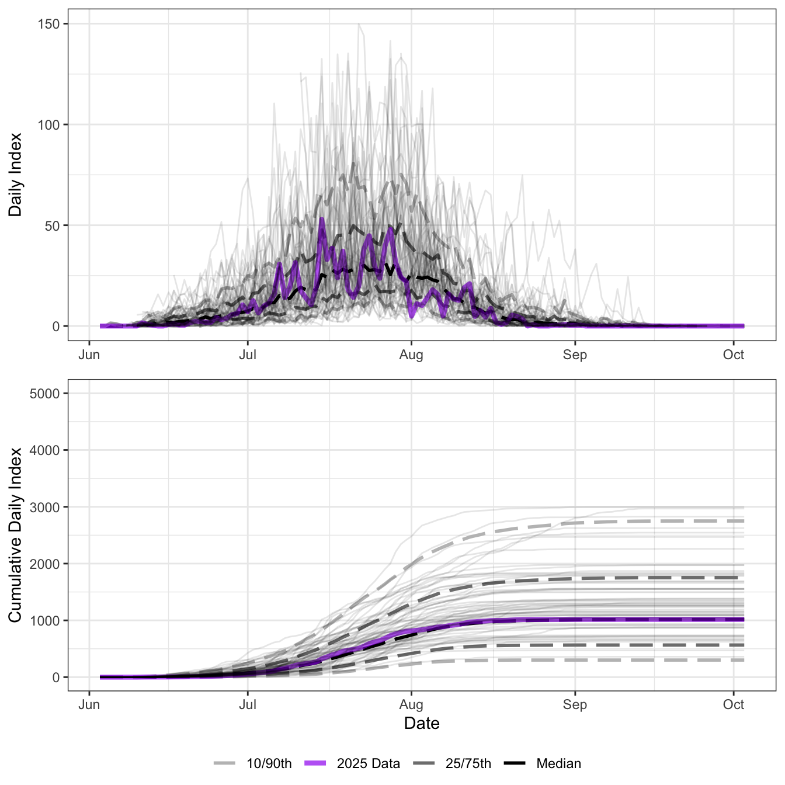
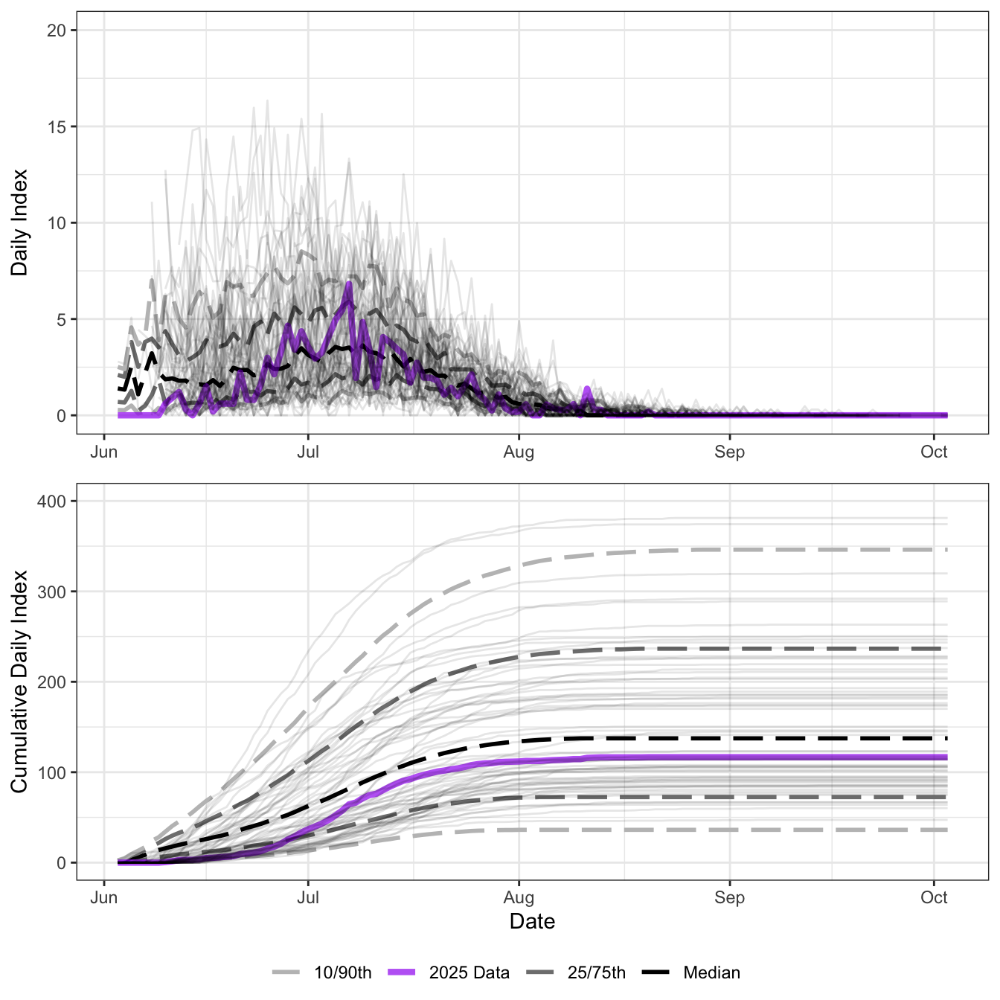
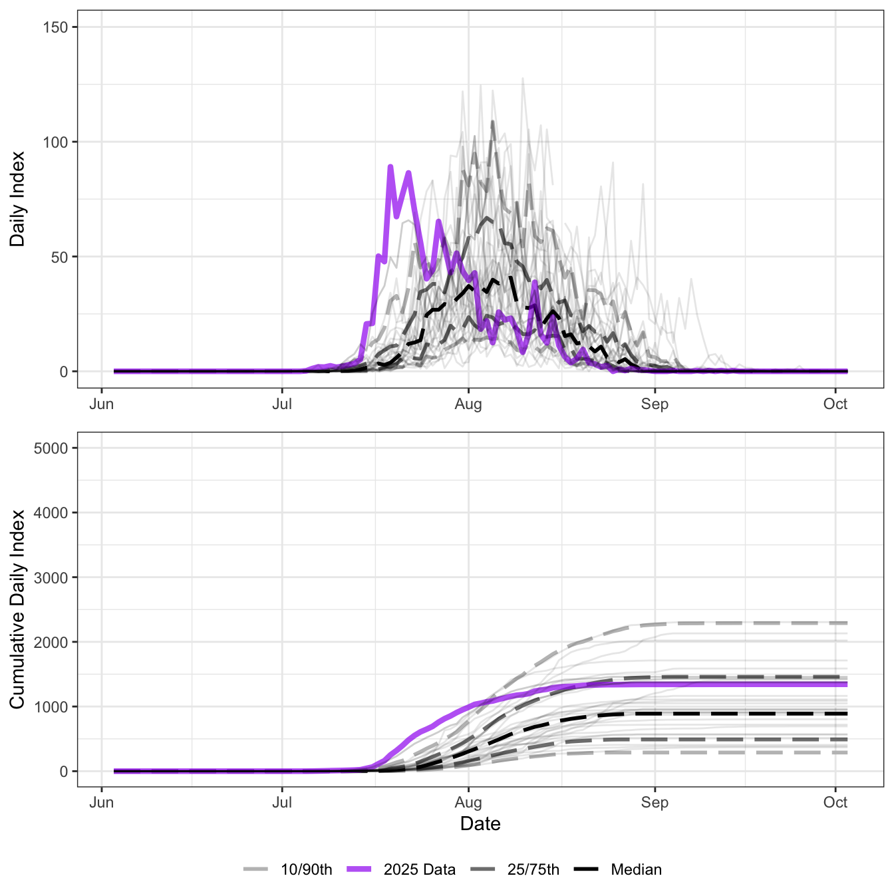
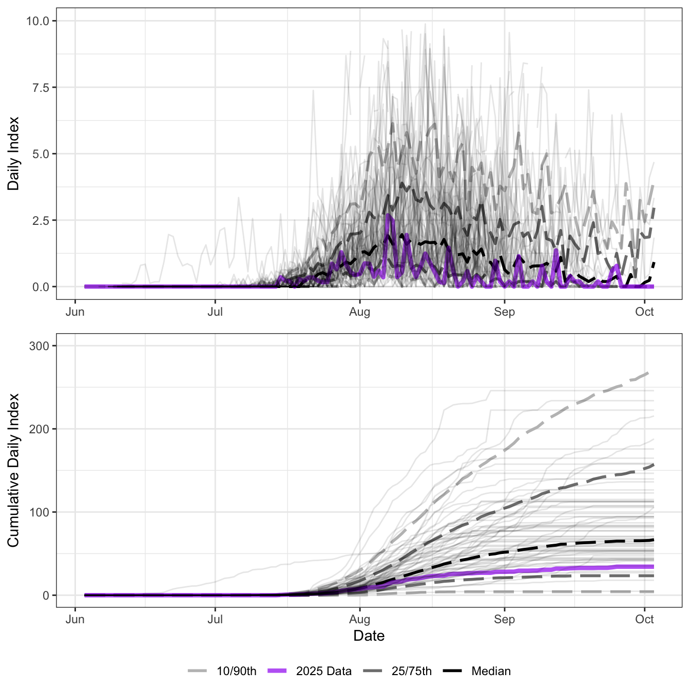
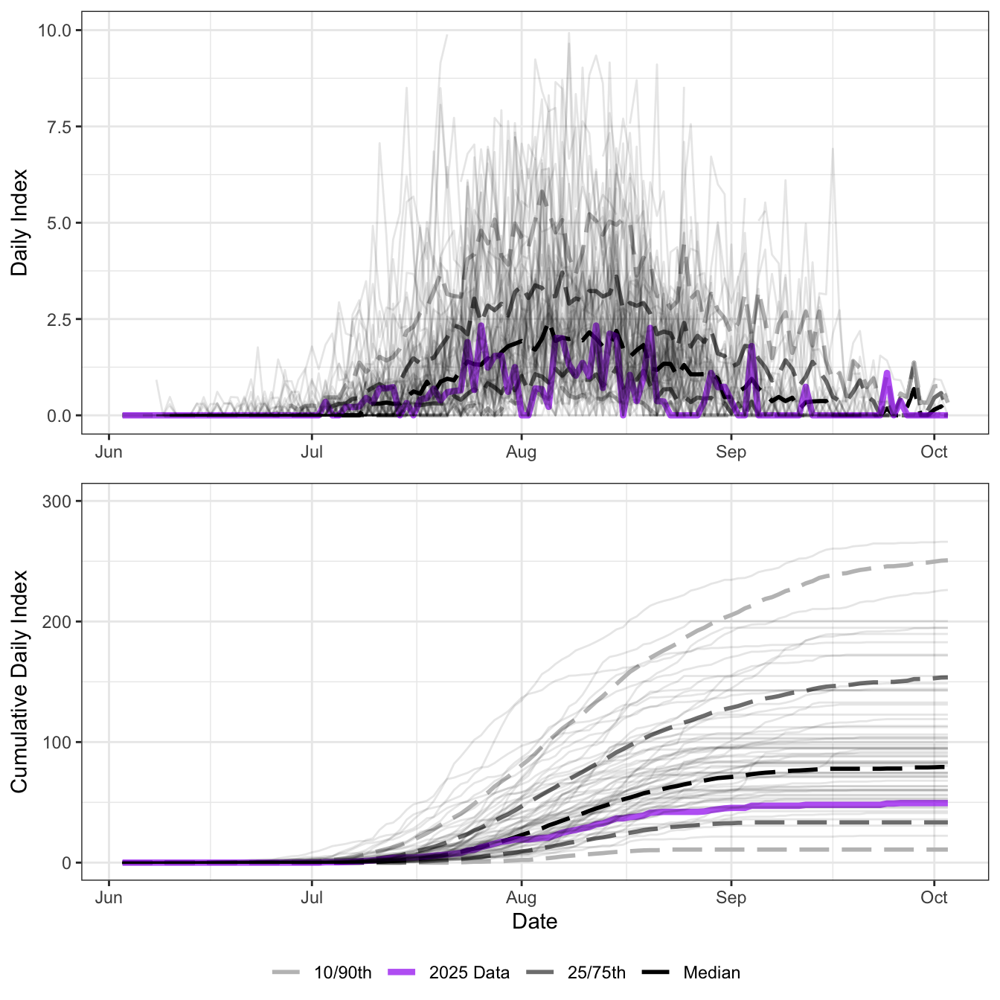

Skeena Salmon In-Season Update
June 11, 2025
Summary
Pre-season forecast
- The pre-season forecast for the Total Return of Skeena sockeye in 2025 ranges from 1.3 to 5.8 million (90% confidence range) with a point estimate (p50) of 2.7 million
Tyee Test Fishery
- The Tyee test fishery started operations on Jun 10.
Babine
The Babine fence typically starts operations in mid-July. This section will be updated once Babine counts start.
Babine vs Tyee comparison
Babine jack sockeye
Babine other salmon
Kitwanga Fence
- The Kitwanga fence typically starts operations by July 10.
First Nations Food Fisheries
- First Nations food fisheries have started on the coast and in the approach waters.
Commercial Fisheries
- Commercial fisheries targetting sockeye have not started yet, but are anticipated given the pre-season sockeye forecast.
Recreational Fisheries
- Recreational fisheries for sockeye have not started
- Early recreational fisheries for Chinook occured in Areas 3/4 however effort was lower in 2025 than in previous years, bag limits were reduced, and as of June 22 there is non-retention of Chinook in the Area 3/4 fishery.
Appendix A shows the daily and cumulative run-timing of Tyee since 2000 versus 2024.
Appendix B will include information on the other species caught in the Area 4 commercial fishery and CPUEs and will be updated shortly.
Appendix C includes information on run-timing of specific Skeena Conservation Units/stocks.
Pre-Season Forecasts
Sockeye
The pre-season forecast for the Total Return of Skeena sockeye in 2025 ranges from 1.3 to 5.8 million (90% confidence range) with a point estimate (p50) of 2.7 million.
Chinook
- The pre-season forecast for Chinook is ~ 26,000 large Chinook.
Tide information at Port Edward
Tyee Test Fishery-Index and Escapement Estimates
The section below shows index data (and escapement data for sockeye) from 2025 compared to historical index values through Tyee. Data is uploaded from the DFO Tyee test fishery website (index and expanded estimates) almost daily.
The DFO Tyee test fishery website can be found here: Tyee test fishery website
Sockeye Salmon
The 2025 sockeye index is shown below and compared to historical index data from the Tyee test fishery (Figure 1) in the text.
Chinook Salmon
The 2025 Chinook index is shown below and compared to historical index data from the Tyee test fishery (Figure 2) in the text.

Chum Salmon

Pink Salmon
Odd years

Even years
- Will be updated next year!
Coho Salmon

Steelhead
